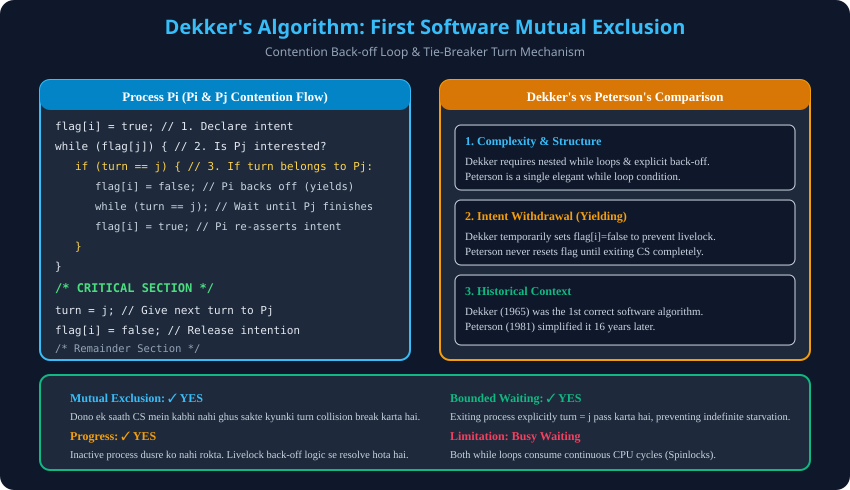

Syllabus Coverage: Gateway Classes Slides 108–120 | 1st Correct Software Mutual Exclusion Algorithm, Collision Resolution, Comparison with Peterson.
flag[i] = true;
while (flag[j]) {
if (turn == j) {
flag[i] = false; // Polite back-off to prevent Livelock
while (turn == j); // Wait until Pj exits CS
flag[i] = true; // Re-assert intention
}
}
/* CRITICAL SECTION */
turn = j;
flag[i] = false;
| Feature | Dekker's Algorithm (1965) | Peterson's Algorithm (1981) |
|---|---|---|
| Structure | Nested loops with explicit back-off. | Single concise while condition. |
| Intention Reset | Temporarily drops flag to false during conflict. | Keeps flag true; modifies turn only. |
| Criteria Satisfied | Mutual Exclusion, Progress, Bounded Waiting. | Mutual Exclusion, Progress, Bounded Waiting. |
| Instruction Count | Higher (more branches and checks). | Lower (minimal overhead). |